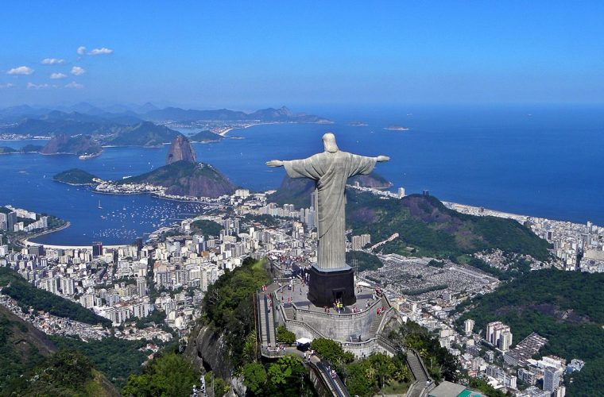
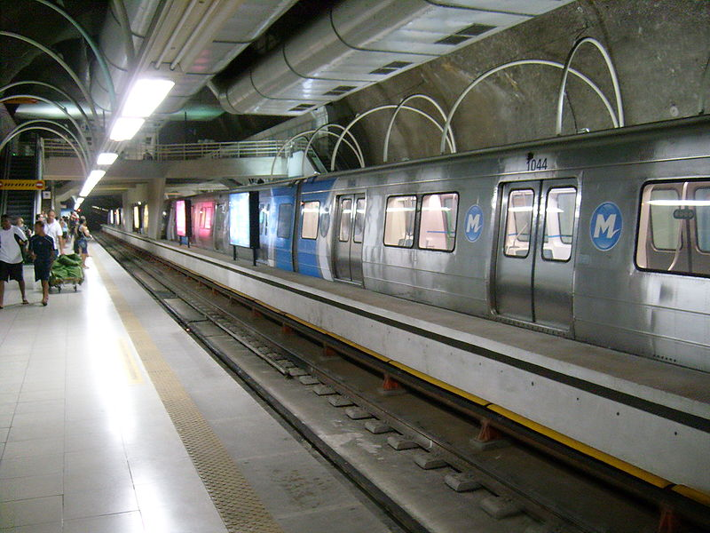
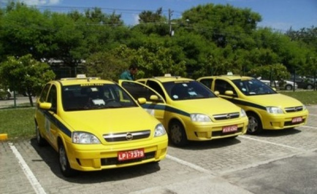
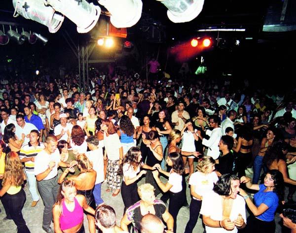
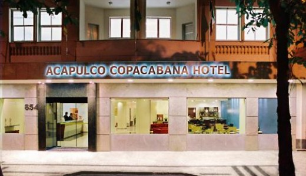
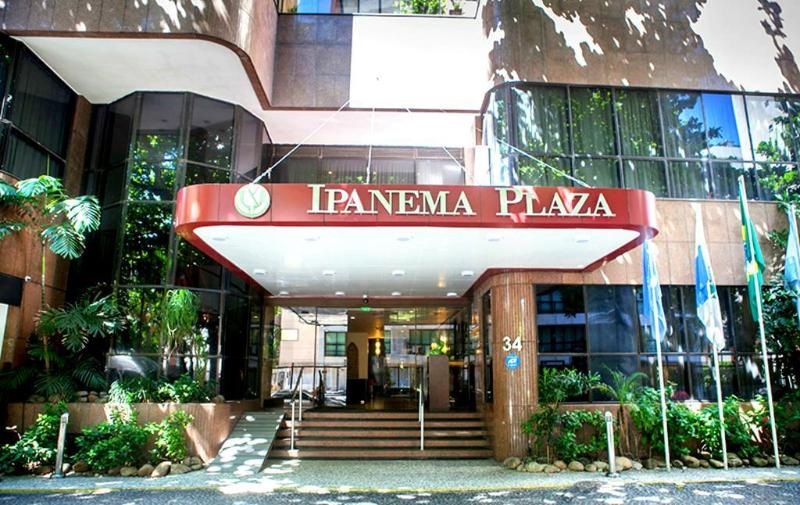
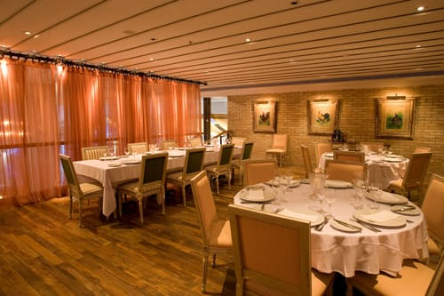
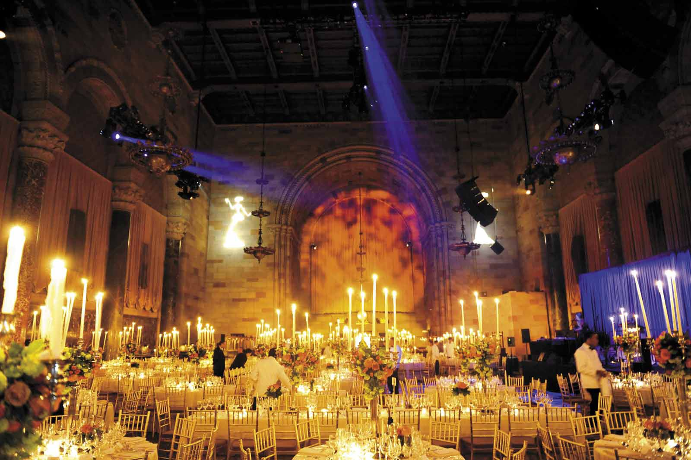

Rio de Janeiro

La ciudad de Río de Janeiro se encuentra dividido en cuatro zonas muy diferentes que son la zona Sur, la zona Norte, la zona Oeste y la zona Centro. Para el turismo son interesantes únicamente las zonas Centro y Sur, donde podemos encontrar grandes edificios históricos, atracciones culturales como museos, colecciones de arte, iglesias con una arquitectura increíble, etc. Por otro lado, nos encontramos con hermosos paisajes rodeados de montañas, mar y playas que son un sueño; y a la noche tendrás decenas de bares y clubes nocturnos para recorrer.
Desplazarse en Río de Janeiro
En la ciudad de Río de Janeiro existen diversos medios para desplazarse, aquí te mostramos los más populares.
Metro

Estación de Metro Cantagalo
Si bien no existe en Río de Janeiro, un sistema unificado de transporte público, todos ellos son controlados por la SECTRAN. Poseen un servicio de metro de excelente calidad y servicio: el metro Río (tel. (21) 3982 3600), que cuenta con aire acondicionado y son muy rápidos e higiénicos.
Existen dos líneas en funcionamiento diariamente de lunes a sábados en horario de 05,00 a 00,00 hs. y los días domingos y feriados el horario es de 07,00 a 23,00 hs. Los billetes se deben comprar en la estación y su precio es de 2 reales. El abono de 10 billetes cuesta 20 reales. Es aconsejable para quienes utilicen este tipo de servicio, tomar recaudos con sus pertenencias en las estaciones para no ser víctimas de los ladrones que suelen concurrir a las estaciones.
Autobuses
Los autobuses son muy económicos y circulan por toda la ciudad a intervalos regulares. Las compañías que prestan servicios son varias y los autobuses circulan durante las 24 horas. Este medio de transporte es bastante seguro pero es mejor tener cuidado, especialmente en las horas pico y durante los viajes nocturnos. En los autobuses los billetes son vendidos por el conductor y tienen un valor que oscila entre 1,60R$ y 1,70R$, según el autobús tenga o no aire acondicionado. Otra excelente opción es adquirir el Metro/Omnibus, que es un billete que combina estos dos tipos de transporte y tiene un coste de 3,20R$.
Taxis

Taxis en Río de Janeiro. Los taxis amarillos pueden cogerse en la calle y están equipados con taxímetros. La bajada de bandera tiene un coste determinado que generalmente asciende los días domingos y feriados, en un 20%. Los precios de los taxis están bastante bien, aunque los viajes nocturnos sueles ser bastante más costosos. La tarifa mínima es de 3,30R$, más 0,98R$ por kilómetro recorrido.
Se aconseja siempre utilizar taxis oficiales, los que se encuentran identificados con una pegatina identificatoria en la ventana. En los aeropuertos existen taxis especiales, de color azul o rojo y cuyos cupones se adquieren en los quioscos de la terminal. Las compañías de radio taxi son también muy confiables aunque más caras que es resto.
Algunas de ellas son:
Central de Táxi – Teléfono: (21) 2593 2598
Coopertramo – Teléfono: (21) 2560 2022
Transcoopass – Teléfono: (21) 2560 4888 ó 2590 6891
Limusinas
Son muchos los hoteles y oagencias de viaje que ofrecen servicios de vehículos privados de lujo. Una de ellas es la compañía Freedom Noivas, que ofrece pequeñas limousinas mercedes Benz a un precio de 350R$ la hora. (Teléfono (21) 3805 2253).
Conducir por la ciudad de Río de Janeiro
Conducir en la ciudad de Río de Janeiro requiere de toda la paciencia de la que se disponga ya que el tráfico es realmente muy denso y existen muchas calles de un solo sentido. No obstante ello es uno de los mejores modos para realizar excursiones y visitar las playas más alejadas de la ciudad.
En Río de Janeiro es obligatorio usar cinturón de seguridad y siempre aconsejan mantener las puertas cerradas con el seguro. El aparcamiento es todo un tema, encontrarlo es muy difícil, máxime si circula por el centro de la ciudad. Lo mejor es estacionarlos en aparcamientos que cuenten con vigilancia, cuyo coste aproximado es de 2R$ por día.
Alquiler de coches
El abanico de opciones en cuanto a agencias de arrendamiento de vehículos es muy amplio. Generalmente requieren una edad mínima de 21 años, lo que puede variar de una compañía a otra. Los pagos, en la mayoría de los casos, se efectúan con tarjetas de crédito y exigen licencia de conducir internacional, además una licencia del país de procedencia y el seguro. Las tarifas de alquiler incluyen seguro a terceros. Algunas de las compañías más importantes que existen en Río son:
Avis
Dirección; Avenida Princesa Isabel 350 – Copacabana
Teléfono: (21) 2543 8481
Hertz
Dirección: Avenida Princesa Isabel 500 – Copacabana
Teléfono: 0800 701 7300 ó (21) 2275 7440
Alquiler de bicicletas
La ciudad de Río posee más de 70 kms. de carriles para bicicleta, que se situan de manera paralela a las playas y las recorren. Es una excelente alternativa para disfrutar mucho mejor del paisaje y el aire libre.Se pueden alquilar bicicletas en Special Bike, Rua Visconde de Pirajá 135B, Ipanema (teléfono: (21) 2267 7778 ó 2521 2686) por 60R$ al día ó 160R$ a la semana.
Vida nocturna en Río de Janeiro

El pueblo carioca, al igual que todos los brasileños, saben que hacer para pasarla muy bien. La cerveza es habitual a todas horas del día, especialmente en los bares abiertos a la calle. Existen algunos sitios que imponen la llamada «happy hour» donde sirven aperitivos y comidas ligeras.
El movimiento nocturno comienza recién alrededor de las 23.00 hs, horario en que las discos abren sus puertas y permanecen así hasta aproximadamente las 4 de la madrugada. El coste de la entrada está alrededor de los 15R$ y al ingresar se entregan unas tarjetas en las que se marcan las consumiciones. Un consejo: no pierdas esa tarjeta ya que si lo haces deberás abonar un cargo de 300R$. El valor de la cerveza es de aproximadamente 5R$, mientras que otro tipo de tragos pueden costar más de 6R$. Para consumir bebidas alcohólicas debes tener más de 18 años.
Los bares y discotecas que se encuentran a lo largo de las playas de Ipanema, Copacaban y Leblón son las mejores y en cuanto a la vestimenta, depende de cada uno, a algunos les gusta vestir de modo elegante, pero hay también quienes acuden en shorts y camisetas.
Para estar informado de las más importantes eventos y espectáculos que se llevan a cabo en la ciudad, nada mejor que adquirir un ejemplar del periódico O Globo que ofrece su revista Río Show los días viernes. En Río, al igual que en el resto de Brasil es ilegal el juego.
Cerro del Corcovado
El Cerro del Corcovado es uno de los principales símbolos de la ciudad de Río de Janeiro y debe su nombre a su forma particular. En la cima del cerro, a 710 mts. sobre el nivel del mar, se encuentra el icono de Brasil: el Cristo Redentor. La estatua del Cristo Redentor fue inaugurada en 1931 y mide aproximadamente 30 mts. de altura. La mejor manera de ascender al cerro para visitar el Cristo es en el tranvía histórico, cuyo recorrido de aproximadamente 10 minutos y se realiza a través del bosque hasta llegar a la estación.
Las vistas durante el ascenso son realmente increíbles y permite parar en los miradores de Vista Chinesa, Mesa del Emperador y Doña Marta para apreciar mejor el paisaje. El tren hacia la cima parte diariamente desde la Rua Cosme Velho 513 a las 8,30 de la mañana. Para llegar hasta el lugar existen diversas líneas de transporte público que provienen desde Leblon, Ipanema, Copacabana, Botafogo o Flamengo. En auto se accede por la Rua Cosme Velho.
Ingreso
El ingreso está abierto al público de 8 a 18 hs y el coste varía según se ascienda a pie, en tren o en coche. En la base del cristo existen diversas plataformas conectadas entre si por escaleras y desde allí se pueden obtener vistas panorámicas de diversos puntos de la ciudad, como la Laguna Rodrigo de Freitas, las playas de Ipanema y Leblon, el Jardín Botánico, el Jockey Club y gran parte del Parque de Tijuca, hacia el sur; y Copacabana, Botafogo, Flamengo, la Bahía de Guanabara y el Pan de Azúcar, hacia el norte.
Estación de Corcovado
Dirección: Rua Cosme Velho 513, Cosme Velho
Teléfono: (21) 2558 1329
Página web: www.corcovado.com.br
Transporte: Autobuses: 180, 181, 182, 183 ó 184 desde el Centro y Flamengo; autobús 583 ó 584 desde Botafago, Copacabana e Ipanema
Pan de Azúcar (Pão de Açúcar)

En principio este cerro se llamaba Pau-nh-Açquá, nombre dado por los indios Tupí. Posteriormente y debido a su forma, su nombre fue cambiado por los portugueses que lo llamaron Pão de Açúcar. Este cerro tiene una altura de 750 mts. sobre el nivel del mar y desde allí, al igual que del Cerro Corcovado, se pueden obtener excelentes vistas panorámicas de la ciudad.
Pão de Açúcar
Muchos de los visitantes deciden ascender a la cima escalando, pero sin dudas el modo más tradicional y cómodo es mediante el teleférico (bondinho), en funcionamiento desde 1912. La ruta de los teleféricos hacia la cima se lleva a cabo en dos tramos: el primero de ellos va desde la Praia Vermelha hasta una altura de 220 mts. sobre el nivel del mar y realiza la parada en la cima del Morro da Urca. La segunda parte del trayecto llega hasta el Pão de Açúcar, a 750 mts. y es desde allí donde se aprecian las mejores vistas. El horario ideal para ascender es durante la puesta del sol. Los teleféricos son 2 y parten cada 30 minutos desde Praza General Tibúrcio en Urca.
Estación de Teleférico de Pão de Açúcar
Dirección:Avenida Pasteur 520, Praia Vermelha
Telefóno (21) 2546 8400
Pagina Web: www.bondinho.com.br
Transporte: Autobús 107 desde el Centro
Flamengo y Botafogo; autobús 511 ó 512 desde Copacabana, Ipanema y Leblon
Hoteles
Acapulco Copacabana Hotel

Una de las mejores opciones en cuanto a alojamiento en la ciudad de Río de Janeiro. Totalmente reformado y con una atención de excelente nivel, este hotel se encuentra casi en la Playa de Copacabana, muy cerca de los principales centros de atracción turística de la ciudad, teatros, shoppings, restaurantes y comercios.
A solo 10 minutos del centro y del Aeropuerto Santos Dumont, disponen de personal multilingüe para mayor comodidad de los huéspedes. Las tarifas del hotel incluye desayuno buffet, uno de los mejores de la ciudad y que se sirve en horario extendido de 6,00 a 11,00 horas. En la antesala se encuentra el bar, que ofrece a los huéspedes, una pantalla gigante para poder disfrutar de buenas películas. Muy cerca de la antesala además, cuentan con dos computadores con acceso a internet de acceso libre para quienes se alojan en el hotel.
El hotel dispone de 110 habitaciones y 12 suites, algunas enmoquetadas y otras para no fumadores, todas ellas con televisión por cable y control remoto, agua fria y caliente, radio, reloj, teléfono con discado directo, frigobar, juegos de amenities, acceso a Internet y aire acondicionado. Disponen además de estacionamiento propio interno y servicio de parking incluido en las tarifas. Aceptan todas las tarjetas de crédito.
Dirección y contacto
Dirección: Rua Gustavo Sampaio, 854 – Copacabana – Rio de Janeiro – Brasil
Teléfono: +55(21) 2275-0022
Fax: +55(21) 2275-3396
Correo-e: contato@acapulcohotel.com.br
Hotel Ipanema Plaza

Lo más moderno en tendencias hoteleras. El Ipanema Plaza Hotel está situado en Ipanema, un barrio exclusivo y pintoresco de la ciudad de Río de Janeiro, a tan sólo 50 mts. de la playa y a 5 minutos de Copacabana. Cuenta con 140 habitaciones y suites exquisitamente decoradas y muy confortables, completamente equipadas con aire acondicionado central, dos líneas telefónicas, acceso a Internet, minibar, TV por cable, cofre electrónico y bañera.
Actualmente el hotel ha inaugurado un sector llamado Ipanema Floor, mucho más refinado y con lo último en tecnología. Su acogedor Bar y bistró Chez Pierre, se pueden disfrutar de excelente almuerzos y cenas en un ambiente relajado y con mesas que ofrecen una deliciosa vista al mar. El menú es variado, desde cocina internacional a platos sofisticados, pasando por ensaladas, tapas y café.
Desde su amplia terraza se puede observar la playa de Ipanema, de la Lagoa y hasta el Cristo Redentor: Allí se ubica la enorme piscina y el sauna seco y a vapor , a entera disposición de los huéspedes, además de contar con servicio de guardavidas, sillas y sombrillas. Posee además un completo Fitness Center con bicicleta fija, cinta para caminar y aparatos multifunción.
Dirección y contacto
Dirección: Rua Farme de Amoedo, 34 – Ipanema, Rio de Janeiro
Teléfono: (55) (21) 3687-2000
Correo-e:Hotel Ipanema
Restaurante Antiquarius

El Restaurante Antiquarius es uno de los mejores de Río de Janeiro y se especializa en cocina clásica portuguesa, siendo premiado en distintas ocasiones por ella. Su nombre deriva de su similitud a una tienda de antigüedades y cuenta con amplia variedad de exquisitos vinos franceses, españoles y portugueses.Algunas de sus especialidades son la pierna de cordero y la langosta termidor. Ofrecen además más de 50 variedades de bacalao. Es aconsejable efectuar las reservas de las mesas con suficiente anticipación.
Dirección y contacto
Dirección: Rua Aristides Espinola 19, Leblon
Teléfono: (21) 2294 1049/1496. Fax: (21) 2512 5756
Correo-e: informacoes@antiquarius.com.br
Página web:Antiquarius
Restaurante Cipriani

Ubicado en el hotel Copacabana Palace, es uno de los restaurantes más exquisitos de Río de Janeiro. Con sus pisos de mármol y sus ventanas estilo francés, cuenta con exclusivo chef de Venecia que prepara platos típicos del norte de Italia con un toque brasilero.Sirven pastas y sopas y algunos platos especiales como el filete de venado con limón y alcaparras sobre pastel de patata o filete de atún a la naranja y a las finas hierbas. La vestimenta requerida incluye chaqueta y corbata y los fines de semana no se consigue lugar sin reserva.
Dirección y contacto
Dirección: Copacabana Palace, Avenida Atlântica 1702,Copacabana
Teléfono: (21) 2548 7070 ó 2262 0198 (después de las 20.00 durante los fines de semana)
Fax: (21) 2235 7330
E-mail: reservas@copacabanapalace.com.br
Página web:Copacabana Palace